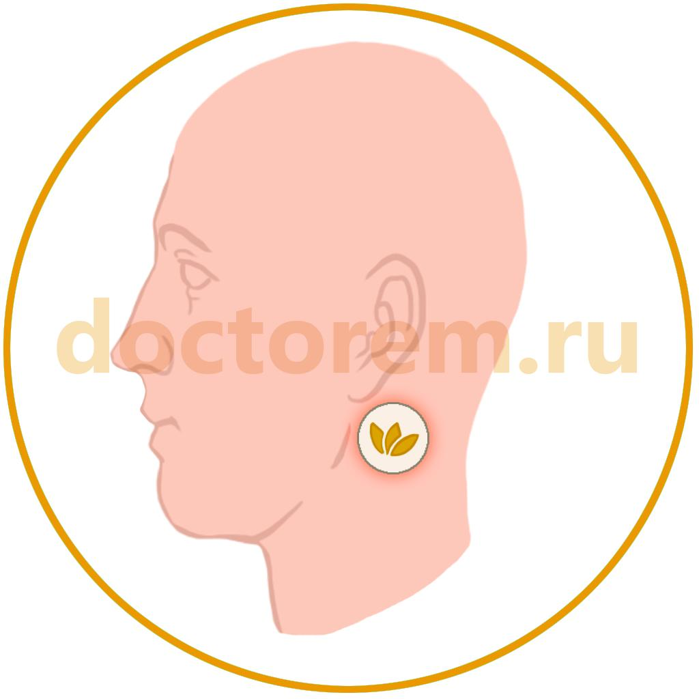
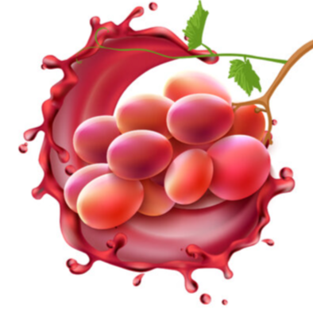

Omega Plus
2000 р.
ОПИСАНИЕ:
Doctorem Omega Plus оказывает неоспоримое влияние на человеческий организм. Он важен для полноценной работы головного мозга, кровообращения, нервной системы, правильного обмена веществ. Doctorem Omega Plus улучшает вязкость крови, поддерживает активность лейкоцитов, снижает концентрацию гомоцистеина, аминокислоты, накопление которой приводит к тромбообразованию.Doctorem Omega Plus стимулирует иммунную систему, обладает противовоспалительными свойствами, укрепляет природный защитный барьер от бактерий и вирусов, обеспечивает доставку кислорода к тканям и клеткам, активирует производство гормонов, принимающих участие во всех биохимических клеточных процессах. Способствует формированию мужских половых клеток, мембранной оболочки нейронов головного мозга, а также сетчатки глаз, поддерживает подвижность суставов, купирует болевой синдром при артритах и артрозах.
Жирные кислоты, содержащиеся в пластыре, замедляют процессы старения, снижают аппетит и подавляют чувство голода, улучшают внимание, память, участвуют в обменных процессах гормона радости, снижая эмоциональное напряжение. Помогают сохранить здоровье волос, кожи, ногтей. Помогают при планировании беременности подготовить организм, а также способствуют правильному развитию плода.
Жирные кислоты должны поступать в организм на протяжении всей жизни, однако острый дефицит может наступить именно с возрастом, если с питанием восполнить нехватку Омеги не получается, это особенно важно для женщин после 40 лет. Жирные кислоты помогают продлить молодость кожи, снизить уровень "плохого" холестерина, они оказывают поддержку суставам, уменьшают риск проблем с сердцем, защищают от остеопороза, облегчают симптомы менопаузы.
ОБЛАСТЬ ПРИМЕНЕНИЯ:
- предотвращает сердечно-сосудистые заболевания;
- снижает уровень холестерина;
- препятствует возникновению тромбов;
- поддерживает здоровье глаз;
- поддерживает здоровье мозга;
- профилактика инфаркта;
- способствует снижению кровяного давления;
- помогает при диабете;
- помогает при головных болях и мигрени;
- улучшает состояние кожи, волос и ногтей.
СРОК ЭФФЕКТИВНОГО ВОЗДЕЙСТВИЯ:
48 часов с момента нанесения.СОДЕРЖИМОЕ УПАКОВКИ:
25 пластырей круглой формы диаметром 3 сантиметра.СОСТАВ АКТИВНОГО ВЕЩЕСТВА:
ЗОНЫ НАНЕСЕНИЯ:
Под мочкой уха рядом с верхней частью нижней челюсти.

ОПИСАНИЕ АКТИВНЫХ ЭЛЕМЕНТОВ
Масло криля
- это вещество, полученное от «Euphausia superba», обитающего в океанах. Масло криля является пищевой добавкой, которая содержит высокую дозу омега-3 жирных кислот, астаксантина, витамина А и витамина Е.В качестве источника Омега-3 и 9 оно более предпочтительно, потому что усваивается легче, чем другие рыбьи жиры.
Масло криля также более эффективно, чем рыбий жир, при снижении уровня триглицеридов и холестерина ЛПНП, известного как плохой холестерин. Аналогичным образом оно помогает снизить риск сердечных заболеваний благодаря его положительному влиянию на резистентность к инсулину.
Поддерживает борьбу со старением благодаря содержанию антиоксидантов. Уменьшает симптомы предменструального синдрома, который вызывает предменструальную боль и психологические изменения.
Масло криля обладает сильным противовоспалительным действием. Таким образом, они оказывают влияние на облегчение симптомов артрита.
Омега-3 и Омега-9
- являются незаменимыми жирными кислотами, которые организм не может воспроизвести, но должен получить их извне, для производства клеточных мембран и многих гормонов.Благодаря своему вкладу в контроль пролиферации клеток, они оказывают потенциальное влияние на укрепление иммунной системы и участвуют в борьбе с опухолями.
Обладая противовоспалительным действием, они эффективны против воспалительных заболеваний кишечника (язвенный колит и болезнь Крона) и аутоиммунных ревматологических заболеваний.
Они снижают уровень жирных кислот в крови, повышают ЛПВП, известный как хороший холестерин, поэтому помогают предотвратить заболевания, связанные с закупоркой сосудов, такие как сердечный приступ и инсульт, предотвращают высокое кровяное давление.
Они имеют преимущества в уменьшении симптомов неврологических и психиатрических заболеваний и предотвращении возрастной потери зрения.
Коэнзим Q10
- является полезным витаминоподобным соединением, которое организм может вырабатывать и которое можно принимать извне. Тем не менее, рекомендуется принимать его в качестве дополнительной добавки, так как его выработка уменьшается в организме с возрастом.Применяется для роста клеток, защиты от повреждений, старения и выработки энергии.
Существуют исследования, которые могут оказать положительное влияние на лечение некоторых заболеваний, таких как высокое кровяное давление, мигрень, ревматоидный артрит, болезнь Паркинсона и фибромиалгия.

Витамин Е и С
Витамин Е - играет защитную роль от сердечных заболеваний, необходим для здоровья глаз, особенно для состояния сетчатки. Обладает защитным действием против старения, оказывает профилактическое воздействие на активность мозга и память.Витамин С - аскорбиновая кислота необходима нашему организму для защиты от последствий стресса и укрепления иммунитета. Она усиливает процессы восстановления, повышает защитные силы организма и увеличивает устойчивость к инфекциям.

Цинк
- является одним из важнейших минералов, поскольку он не вырабатывается в организме человека, его необходимо получать извне.Цинк имеет много функций, таких как поддержка иммунной системы, укрепление волос, ногтей, поддержание здоровья кожи, увеличение минеральной плотности костной ткани, поддержка лечения глазных заболеваний.
